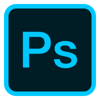
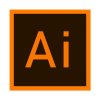
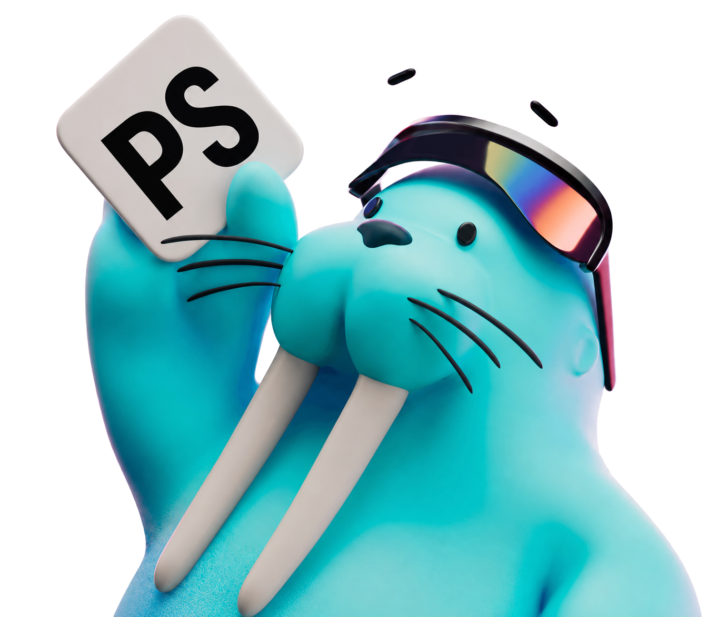

深圳诚迈创通科技有限公司
设计职责：UI 界面 / 运营视觉
- 产品界面：与交互设计师协作，负责 TCL App 迭代及设备控制页面的视觉设计，围绕功能层级、信息布局与控件状态细化方案，保持移动端与设备端的视觉一致性。
- 设备场景：参与耳机、商用空调、海外冰箱等产品的控制界面设计，覆盖 10 寸、7 寸、3.5 寸操作屏，结合不同屏幕尺寸梳理内容呈现与操作重点。
- 运营视觉：完成企业内部宣传海报，将宣传内容转化为清晰的视觉层级，通过版式、字体与色彩突出主题和关键信息，兼顾画面表现与阅读效率。
 HI！我是刘柯乐
全部作品
HI！我是刘柯乐
全部作品

视觉 / 运营设计师活动视觉、商业插画与 UI 设计
About Me
专注视觉与运营设计，具备金融、智能家居及企业服务项目经验。主要参与活动视觉、功能插画与 UI 界面设计，注重信息表达、视觉一致性与实际应用。
My Skills


Photoshop
Illustrator围绕金融服务与家庭能源场景，结合运营视觉、界面设计与数据表达，让信息更清晰、操作更直观。
My Journey
My Process
明确受众、业务目标与使用场景，梳理需要传达的重点。
通过参考、草图与方案对比，确定构图、色彩和图形语言。
将核心视觉延展到页面、插画和运营物料，保持整体一致。
整理规格、组件与素材，与协作方核对细节并跟进呈现。

Let’s Work Together